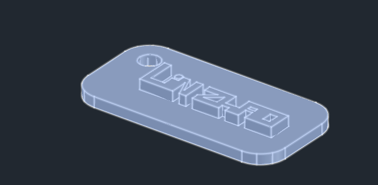

Fusion 360, Sketchup and AutoCAD
We get to use all these software to construct our own keytag
Making use of it we then started to 3Dprint it by export it to Ultimaker Cura as without exporting it to Ultimaker Cura 3D printer cannot print, once exported settings have to be made like the size , support, infill, speed, amount of material, material and the time of the artifact to be printed
Then we print Interlocking shapes as it is our second project in order to be more familiar with 3d printing and also converting 3D drawing to 3D printout